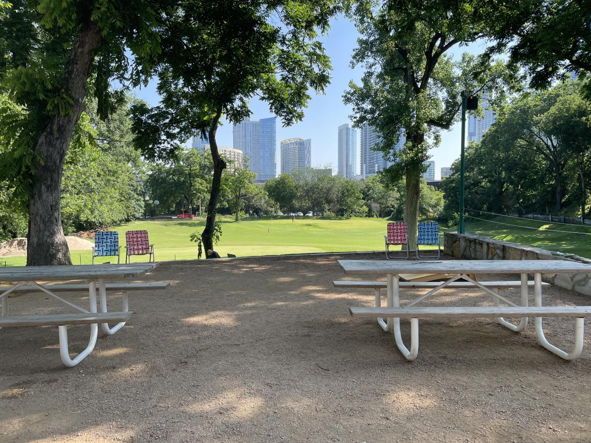

More from TGI
Back to Feed →
Austin’s golf calendar is front-loaded and then it falls off a cliff. The City of Austin’s tournament season ends on 10/3. Austin Amateur Golf’s runs out in early October. Neither University of Texas team plays a home event before an NCAA regional at UT Golf Club in May 2027. From December to March the calendar belongs to the indoor and social side, which is better than it sounds.
In between there is a six-week run in October and November that is the best stretch of the year, including the PGA Tour’s first visit to Austin since 2023. Which brings us to the thing everyone has wrong.
The November Tour event is not called the Good Good Championship any more. Good Good Golf announced on 8/27 that it was stepping away as title sponsor. The official tournament site now presents the event as the Austin Championship and states that ticket sales and volunteer registration are temporarily paused, with existing tickets still valid for the dates purchased. No replacement sponsor has been announced. The PGA Tour’s own page still sits at the old URL and every resale site is still selling it under the old name, so if you are searching for tickets you will find a lot of confidently wrong listings. This is where things stood on 9/16/26.
Everything below carries the date its source page states. Where a thing happens annually but has no announced date, it is in the last section without one, because a calendar that guesses is not a calendar.
Three in three days at the start of the month, then the City’s season is over.
November carries the busiest stretch of the Austin golf year, and the only Tour card on it.
What carries December through March, when the outdoor calendar goes quiet.

Real events with no published date. We are not going to invent one.
The tournament is still scheduled at Omni Barton Creek for 11/12–15/26, but it is no longer called the Good Good Championship. Good Good Golf announced on 8/27/26 that it was stepping away as title sponsor, and the official tournament site now presents the event as the Austin Championship. HNS Sports Group and the PGA Tour have said the event proceeds as planned. No replacement title sponsor has been announced as of 9/16/26.
Not through official channels right now. The tournament site states that ticket sales and volunteer registration have been temporarily paused, and that existing tickets remain valid for the dates purchased and existing volunteer registrations will be honoured. Resale sites are still listing the event under its former name at various prices; those are not official sales, and we would wait for primary sales to reopen.
The outdoor tournament calendar effectively ends on 10/3 with the Pumpkin Open, but the social and indoor side runs year-round. Butler Pitch & Putt holds three weekly leagues downtown, starting at a $3 buy-in. Golfinity runs a free monthly tour across twenty simulator bays with no membership required. Topgolf's league at the Domain runs in defined seasons — the autumn season is closed, so watch for spring.
More than you would think. The Texas AFL-CIO scramble at Crystal Falls on 10/1 takes open online registration, as does the GBTA charity tournament at Onion Creek on 11/2. Golf for Joy at Grey Rock on 11/9 takes registrations by email and says spots are limited. The City of Austin's Pumpkin Open at Hancock is open to the public through BlueGolf, though the City does not publish the entry fee on its own page.
Twice in one week this year. The Austin Championship runs 11/12–15 at Omni Barton Creek's Fazio Canyons course with a 120-player field and a $6,000,000 purse, and the Texas Joe Black Cup follows immediately on 11/16–17 at Driftwood, a Ryder-Cup-format match between the Northern and Southern Texas PGA Sections that has been running since 1981.